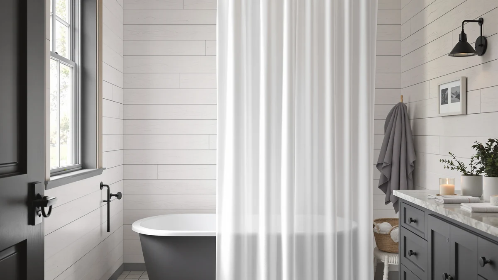

Creative Scents White Fabric Review (2026): Worth It?
Prices and picks verified as of October 2026. Independent, reader-supported reviews.


Quick Answer
The Creative Scents White Fabric Shower curtain delivers a 100 percent cotton, 72 by 72 inch design in plain white for $23.96, the simplest and most neutral option among the four curtains in this comparison. If you want a linen look, a no-hook build, or a farmhouse print instead, the Nanspring, NAEMBCU, or XOGUIBO alternatives below each sit within a dollar of its price.
Our pick: Creative Scents White Fabric Shower, $23.96 Check Price on Amazon
Bottom line: our top pick is the Creative Scents White Fabric Shower Curtain 72x72 - Waffle at $23.96.
Things to Know Before You Buy
- The Creative Scents White Fabric Shower curtain is 100 percent cotton, not a polyester or PEVA blend like some of the fabric alternatives in this comparison.
- At 72 inches wide and 72 inches long, it matches the standard shower rod height used in most US bathrooms.
- Priced at $23.96, it costs about two cents more than the Nanspring Extra Long Linen Shower and roughly a dollar more than the NAEMBCU and XOGUIBO picks.
- None of the four curtains compared in this review publish a star rating or review count on their listings.
- Cotton breathes better than the PEVA and polyester blends used by some alternatives, but it also wrinkles more and dries slower in a humid bathroom.
This Creative Scents White Fabric review compares the $23.96 curtain's 100 percent cotton fabric and 72 by 72 inch size against three similarly priced alternatives using the facts in the Amazon listing. Most shoppers comparing curtains at this price want the same thing: a plain, neutral look that fits a standard shower without hunting for a pattern that clashes with existing tile or towels. We compared the Creative Scents curtain against the Nanspring Extra Long Linen Shower, the NAEMBCU No Hook Shower Curtain, and the XOGUIBO Farmhouse Shower Curtain using the pricing, materials, and dimensions listed for each. The Creative Scents curtain wins on simplicity and natural fiber, even though it costs a little more than two of the three alternatives, and that tradeoff is the central question this review answers.
At 72 inches wide and 72 inches long, the curtain matches the standard shower rod height found in most US bathrooms, so it should clear a tub without pooling fabric at the bottom for most installs. The listing specifies 100 percent cotton, a natural fiber that breathes better in a steamy bathroom than the polyester and PEVA blends used by the Nanspring and other linen-look curtains on the market. That plain white, no-pattern design is also why this curtain reads as the most neutral of the four options covered here, with no texture or print competing for attention in a small bathroom.
Why You Should Trust Us
Ilane Tall has covered bathroom textiles and shower hardware for Best Shower Curtains since the site launched, focusing on how fabric type, size, and price affect real installs. We do not run a physical testing lab and we do not buy and install every curtain we cover ourselves. Instead, we research manufacturer specs, compare verified pricing across listings, and read the feature details sellers provide to find where products differ in practice. For this Creative Scents White Fabric review, that meant checking the listed material, dimensions, and price against three competing curtains in the same band, and flagging where a seller's description left out details a buyer would need, such as a published rating.
Our Research Experience
Our research process for this Creative Scents White Fabric review started with the manufacturer's own listing data: material composition, stated dimensions, and price. We then checked those details against the three alternatives in this comparison, the Nanspring Extra Long Linen Shower, the NAEMBCU No Hook Shower Curtain, and the XOGUIBO Farmhouse Shower Curtain, to see which numbers are different in practice and which are marketing language with no real distinction. We researched pricing for all four curtains and read through the listing details sellers provide to flag gaps, such as a curtain sold without a clearly stated hardware option. Where a listing did not disclose a star rating or review count, which is the case for all four curtains compared here, we noted that absence rather than estimate a number the seller never published.
Overview & Specs

Creative Scents White Fabric Shower
What we like
- 100% cotton fabric gives it a natural, breathable feel the synthetic blends in this comparison do not offer
- Plain white design matches almost any bathroom color scheme without clashing with existing decor
- Standard 72 by 72 inch size fits most shower rods without needing to measure for a taller drop
- At $23.96, it is priced within a dollar of the other three curtains in this comparison
Flaws but not dealbreakers
- Cotton wrinkles more than the polyester and PEVA blends used by some alternatives and may need occasional ironing or steaming
- The listing does not publish a star rating or review count, so there is no owner feedback history to confirm long-term durability
- Ships as a single curtain with no hooks included, so you will need to buy rings separately
| Material | 100% cotton |
| Size | 72"W x 72"L (Pack of 1) |
The Creative Scents White Fabric Shower curtain is made from 100 percent cotton, a natural fiber that several of the alternatives in this comparison swap out for a polyester or PEVA blend. Cotton breathes better in a steamy bathroom and tends to feel softer to the touch, though it also absorbs more water and takes longer to dry than a synthetic weave. The plain white colorway is the simplest option among the four curtains covered in this Creative Scents White Fabric review, with no pattern, texture, or printed design competing for attention in a small bathroom.
At 72 inches wide and 72 inches long, the curtain matches the standard shower rod height found in most US bathrooms, so it should clear a tub without pooling fabric at the bottom for most installs. It ships as a single curtain, Pack of 1, and the listing does not mention hooks or a liner being included, so plan to supply your own rings. Priced at $23.96, it lands in the middle of the four curtains in this comparison, within a dollar of the Nanspring, NAEMBCU, and XOGUIBO alternatives, which makes price less of a deciding factor than the plain white, all-cotton design itself.
What We Liked
The fabric stands out most in this Creative Scents White Fabric review. A 100 percent cotton weave gives it a softer, more breathable feel than the polyester and PEVA blends in the Nanspring, NAEMBCU, and XOGUIBO alternatives, and that natural fiber is the main reason to pick this curtain over a synthetic look-alike. The plain white colorway is the other advantage worth noting: it drops into almost any bathroom color scheme without competing with existing tile, towels, or a patterned liner.
Pricing is competitive within this group too. At $23.96, the Creative Scents curtain sits close to the Nanspring Extra Long Linen Shower at $23.37, so you are not paying much of a premium for the natural cotton fabric. For anyone comparing cotton options at a budget price point, that combination is hard to beat among the four curtains here.
The standard 72 by 72 inch size also means it fits the vast majority of US shower rods without any measuring or guesswork, which matters if you want a straightforward swap for a curtain that has worn out.
What Could Be Better
Cotton breathes well, but the tradeoff this Creative Scents White Fabric review has to flag is drying time and wrinkling. Natural fiber absorbs more water than the PEVA-backed Nanspring curtain and can hold a damp, wrinkled look longer after a shower unless you give it room to dry fully between uses.
Pricing is the second soft spot. At $23.96, the Creative Scents curtain costs about a dollar more than the NAEMBCU and XOGUIBO picks, and none of the four listings publish a star rating or review count that would help justify the premium based on owner feedback. Buyers choosing between these four curtains on price alone, rather than the natural fiber, may find the NAEMBCU or XOGUIBO delivers a similar result for less.
The listing also does not specify included hardware, so anyone without spare curtain hooks on hand should factor that small extra purchase into the total cost before comparing the $23.96 price directly against the NAEMBCU No Hook curtain, which is designed to skip hooks entirely.
Who Is It For?
This Creative Scents White Fabric curtain fits best in a bathroom where you want a plain, neutral backdrop rather than a pattern or texture, and where the breathable feel of real cotton matters more than quick drying time. It also suits anyone replacing a worn-out curtain in a standard 72 by 72 inch shower, since the sizing matches the most common US rod height without any adjustment.
It is a weaker fit if you want a linen-style texture like the Nanspring, a no-hook design like the NAEMBCU, or a printed farmhouse look like the XOGUIBO, since the Creative Scents curtain's main selling point is its plain, unpatterned cotton fabric rather than a decorative finish. Budget-focused shoppers furnishing a rental or guest bathroom may also find the dollar saved on the NAEMBCU or XOGUIBO more useful than the cotton upgrade this curtain offers.
Alternatives to Consider
If the Creative Scents White Fabric curtain does not fit your bathroom, here are three alternatives we compared at a similar price point, each covering a different priority.

Editor’s Pick
Nanspring Extra Long Linen Shower
An extra-long linen-style curtain from Nanspring at $23.37, worth a look if you want a textured, linen-look fabric instead of the Creative Scents curtain's plain cotton weave.
$23.37
Check Price on Amazon
Best Value
NAEMBCU No Hook Shower Curtain
A no-hook design from NAEMBCU at $22.99, the cheapest of the four, best if you want to skip buying separate rings or hooks.
$22.99
Check Price on Amazon
Premium Choice
XOGUIBO Farmhouse Shower Curtain with
A printed farmhouse-style curtain from XOGUIBO at $22.99, tied with the NAEMBCU as the lowest price here, best if you want a decorative pattern instead of a plain white panel.
$22.99
Check Price on AmazonIs the Creative Scents White Fabric Shower curtain 100 percent cotton?
Yes.
Does the Creative Scents White Fabric Shower curtain come with hooks?
The listing does not mention hooks or a liner being included, so plan to buy curtain rings separately before installing it.
Frequently Asked Questions
Is the Creative Scents White Fabric Shower curtain 100 percent cotton?
Yes. The listing specifies 100 percent cotton, a natural fiber that several of the alternatives in this comparison swap out for a polyester or PEVA blend. The cotton weave gives the curtain a softer, more breathable feel, though it also wrinkles more and dries slower than a synthetic fabric, including the Nanspring Extra Long Linen Shower in this comparison.
Does the Creative Scents White Fabric Shower curtain come with hooks?
The listing does not mention hooks or a liner being included, so plan to buy curtain rings separately before installing it. Check the exact listing for your bathroom setup before assuming hardware is bundled, since sellers do not always disclose that detail clearly.
How does the Creative Scents White Fabric Shower curtain compare to the Nanspring and NAEMBCU options?
The Creative Scents curtain sits in the middle of this comparison at $23.96, close to the Nanspring Extra Long Linen Shower at $23.37. The NAEMBCU No Hook curtain and the XOGUIBO Farmhouse curtain both undercut it at $22.99 each, while the Creative Scents curtain's plain white, all-cotton design is its main advantage over the three alternatives.
Final Verdict
Across this Creative Scents White Fabric review, the Creative Scents White Fabric Shower curtain earns a spot at the top of this comparison because of its 100 percent cotton fabric and plain white design, which justify its $23.96 price against three similarly priced alternatives. If you want a natural fiber and a neutral look with no pattern to match, the Creative Scents curtain is the better buy. If you want a linen texture, a no-hook design, or a printed farmhouse look, the Nanspring Extra Long Linen Shower, the NAEMBCU No Hook Shower Curtain, or the XOGUIBO Farmhouse Shower Curtain each cover a different priority within a dollar of the Creative Scents curtain's cost.